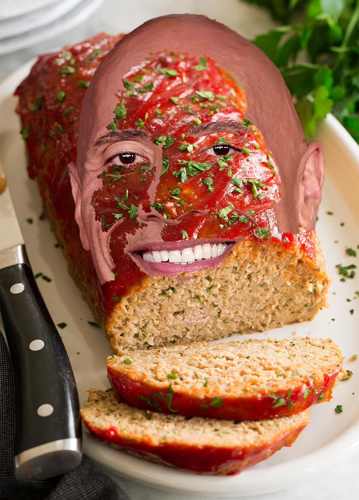

"Dwayne the Rock" Meatloaf Recipe

Description
This is the only Dwayne the Rock Meatloaf recipe that exists on the web. It is potentially
a sensitive topic because to make it you would have to kill Dwayne. It exists in theory (for now), but im sure
it would be delicious.
If anyone can put me in touch with Dwayne, let me know.
Ingredients
- Dwayne "the Rock" Johnson
- Meatloaf
Directions
- Research where critial arterial systems exist in the human body
- Find Dwayne
- Approach Dwayne from behind with a sharp knife
- Stick the knife into Dwayne, making contact with a critical bloodline
- While Dwayne bleeds out, make the meatloaf
- Put Dwayne into the meatloaf
- Cook to desired consistency
Congratulations you have made "Dwayne the Rock" meatloaf